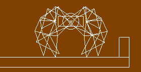

physics_draw_debug()
Returns: N/A
When creating a physics system in GameMaker:Studio, it is often important to have a visual representation of what is actually happening with an instance. This can be achieved by using
physics_draw_debug, which draws a schematic outline of the physical properties associated with the instance running the code. Here is an image of how it looks :

It should be noted that for this to work it must be in the draw event of the instance, and it will be drawn using the currently defined draw color.
draw_set_color(c_red);
physics_draw_debug();
The code above will draw a representation of the physical properties associated with that instance using the color red.